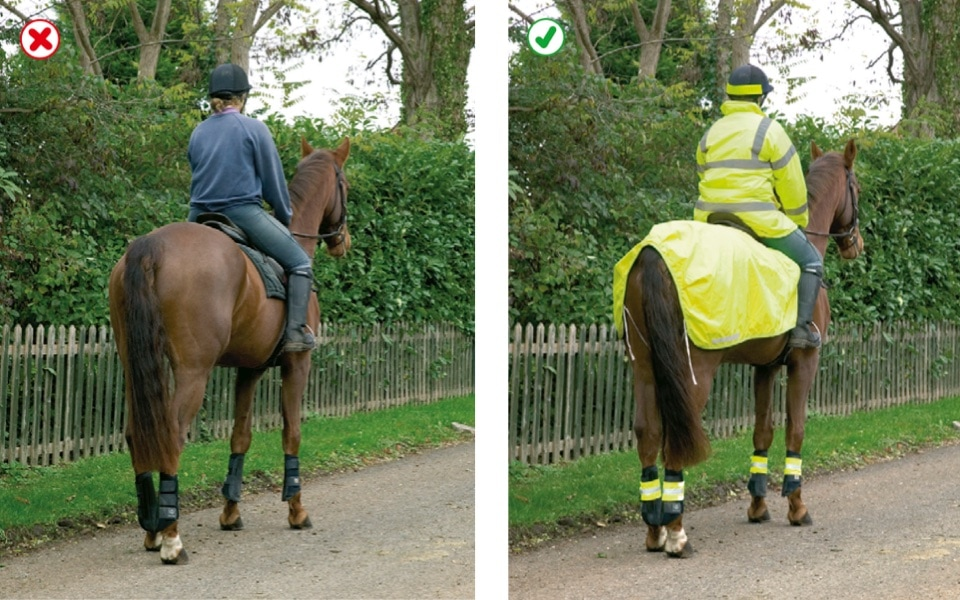

Rules about animals (47 to 58)
- Horse-drawn vehicles (47 to 48)
- Horse riders (49 to 55)
- Other animals (56 to 58)
2. Horse riders (49 to 55)
49
Safety equipment. Children under the age of 14 MUST wear a helmet which complies with the Regulations. It MUST be fastened securely.
Other riders should also follow these requirements. These requirements do not apply to a child who is a follower of the Sikh religion while wearing a turban.
Laws H(PHYR) Act 1990, sect 1 & H(PHYR) Regulations 1992, reg 3
Safety equipment. Children under the age of 14 MUST wear a helmet which complies with the Regulations. It MUST be fastened securely.
Other riders should also follow these requirements. These requirements do not apply to a child who is a follower of the Sikh religion while wearing a turban.
Laws H(PHYR) Act 1990, sect 1 & H(PHYR) Regulations 1992, reg 3
50
Other clothing. You should wear
Other clothing. You should wear
- boots or shoes with hard soles and heels
- light-coloured or fluorescent clothing in daylight
- reflective clothing if you have to ride at night or in poor visibility.

Rule 50- Help yourself to be seen
51
At night. It is safer not to ride on the road at night or in poor visibility, but if you do, make sure you wear reflective clothing and your horse has reflective bands above the fetlock joints. A light which shows white to the front and red to the rear should be fitted, with a band, to the rider’s right arm and/or leg/riding boot. If you are leading a horse at night, carry a light in your right hand, showing white to the front and red to the rear, and wear reflective clothing on both you and your horse. It is strongly recommended that a fluorescent/reflective tail guard is also worn by your horse.
At night. It is safer not to ride on the road at night or in poor visibility, but if you do, make sure you wear reflective clothing and your horse has reflective bands above the fetlock joints. A light which shows white to the front and red to the rear should be fitted, with a band, to the rider’s right arm and/or leg/riding boot. If you are leading a horse at night, carry a light in your right hand, showing white to the front and red to the rear, and wear reflective clothing on both you and your horse. It is strongly recommended that a fluorescent/reflective tail guard is also worn by your horse.
Riding
52Before you take a horse or horse drawn vehicle on to the road, you should
Always ride with other, less nervous horses if you think that your horse will be nervous of traffic. Never ride a horse without both a saddle and bridle.
- ensure all tack fits well and is in good condition
- make sure you can control the horse.
Always ride with other, less nervous horses if you think that your horse will be nervous of traffic. Never ride a horse without both a saddle and bridle.
53
Before riding off or turning, look behind you to make sure it is safe, then give a clear arm signal.
When riding on the road you should
Before riding off or turning, look behind you to make sure it is safe, then give a clear arm signal.
When riding on the road you should
- keep to the left
- keep both hands on the reins unless you are signalling
- keep both feet in the stirrups
- not carry another person
- not carry anything which might affect your balance or get tangled up with the reins
- keep a horse you are leading to your left
- move in the direction of the traffic flow in a one-way street
- never ride more than two abreast, and ride in single file on narrow or busy roads and when riding round bends.
54
You MUST NOT take a horse onto a footpath or pavement, and you should not take a horse onto a cycle track. Use a bridleway where possible. Equestrian crossings may be provided for horse riders to cross the road and you should use these where available (see Crossings). You should dismount at level crossings where a ‘horse rider dismount’ sign is displayed.
Laws HA 1835 sect 72, R(S)A 1984, sect 129(5)
You MUST NOT take a horse onto a footpath or pavement, and you should not take a horse onto a cycle track. Use a bridleway where possible. Equestrian crossings may be provided for horse riders to cross the road and you should use these where available (see Crossings). You should dismount at level crossings where a ‘horse rider dismount’ sign is displayed.
Laws HA 1835 sect 72, R(S)A 1984, sect 129(5)
55
Avoid roundabouts wherever possible. If you use them you should - keep to the left and watch out for vehicles crossing your path to leave or join the roundabout - signal right when riding across exits to show you are not leaving - signal left just before you leave the roundabout.
Avoid roundabouts wherever possible. If you use them you should - keep to the left and watch out for vehicles crossing your path to leave or join the roundabout - signal right when riding across exits to show you are not leaving - signal left just before you leave the roundabout.